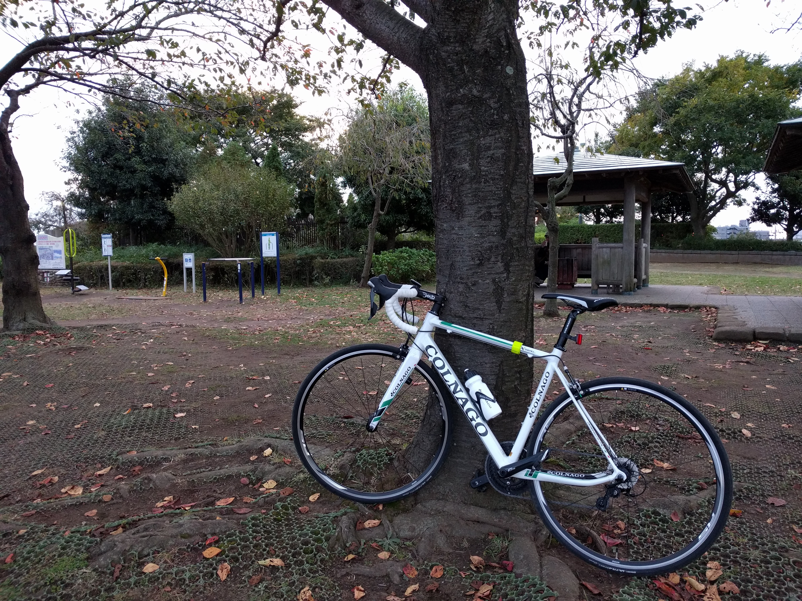
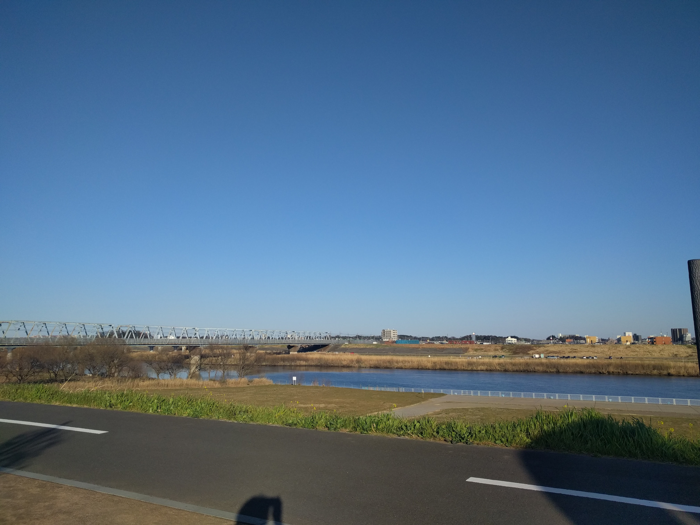
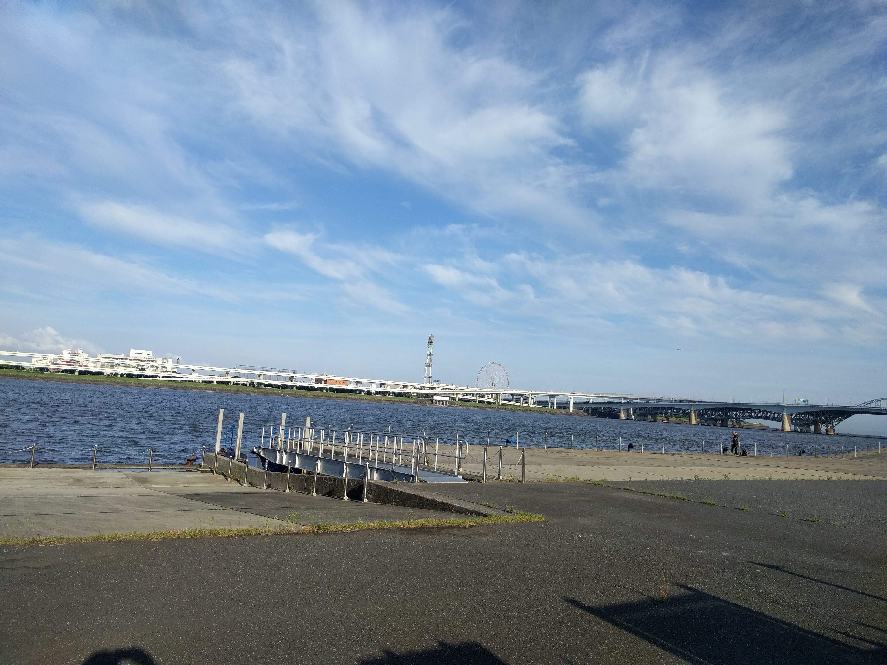

<!DOCTYPE html>
<html>
<title>study</title>
<meta charset="UTF-8">
<meta name="viewport" content="width=device-width, initial-scale=1">
<meta name="viewport" content="width=device-width,initial-scale=1">
<link rel="stylesheet" href="css/reset.css">
<link rel="stylesheet" href="css/style.css">
<link rel="stylesheet" href="css/animate.css">
<link rel="stylesheet" href="css/nav_pc.css">
<link rel="stylesheet" href="css/nav_mob.css">
<link href="https://fonts.googleapis.com/earlyaccess/notosansjp.css" rel="stylesheet" />
<script src="http://ajax.googleapis.com/ajax/libs/jquery/1.8.3/jquery.min.js">

<body>

<!-- Navbar -->
<header id="top-head">
    <div class="inner">
        <div id="mobile-head">
            <h1 class="logo">Logo</h1>
            <div id="nav-toggle">
                <div>
                    <span></span>
                    <span></span>
                    <span></span>
                </div>
            </div>
        </div>
        <nav id="global-nav">
            <ul>
                <li><a href="#">HOME</a></li>
                <li><a href="#">PRODUCT</a></li>
                <li><a href="#">WORKS</a></li>
                <li><a href="#">COMPANY</a></li>
                <li><a href="#">CONTACT</a></li>
            </ul>
        </nav>
    </div>
</header>

<!-- First Grid -->
<div class="w3-row-padding w3-padding-64 w3-container">
  <div class="w3-content">
    <div class="w3-twothird">
      <h1 id="link1">My Bike</h1>
      <h5 class="w3-padding-32">Colnago CX-Zero alu</h5>
      <p class="w3-text-grey">Colnago is a manufacturer of high-end road-racing bicycles founded by Ernesto Colnago near Milano in Cambiago, Italy.</p>

      <p>Frame material : CX-ZERO ALUMINIUM</p>
      <p>Components : SHIMANO 105 11Speed</p>
      <p>Color:LAGR</p>
    </div>

    <div class="w3-third w3-center">
      
    </div>
  </div>
</div>

<!-- Second Grid -->
<div class="w3-row-padding w3-light-grey w3-padding-64 w3-container">
  <div class="w3-content">
    <div class="w3-third w3-center">
      
    </div>

    <div class="w3-twothird">
      <h1 id="link2">cycling course</h1>
      <h5 class="w3-padding-32">Edo River Road</h5>
      <p class="w3-text-grey">Edo River Road is 37.3 kilometer long between Sekiyado Bridge in Satte City, Saitama, and Misato Park, Misato City, Saitama. The road is under management of Saitama Prefecture, however, the road is extended for about 20 kilometer long to south along with Edo River in Tokyo Metropolitan, to Nishi Kasai Beach Park facing to Tokyo Bay.  </p>
    </div>
  </div>
</div>

  <!-- third Grid -->
<div class="w3-row-padding w3-padding-64 w3-container">
  <div class="w3-content">
    <div class="w3-twothird">
      <h1 id="link3">cycling course</h1>
      <h5 class="w3-padding-32">Arakawa River</h5>
      <p class="w3-text-grey">Official route of Arakawa Bike Road is between Kita-Urawa Station of JR Keihin Tohoku Line and Musashi Hills National Park of Namegawa Town, Saitama, which distance is 45.9 kilometers.  A part of this road for 36.4 kilometers, mainly on Arakawa River dike, is dedicated for bike and pedestrian. </p>
    </div>

    <div class="w3-third w3-center">
      
    </div>
  </div>
</div>

<div class="w3-container w3-black w3-center w3-opacity w3-padding-64">
    <h1 class="w3-margin w3-xlarge">Quote of the day: Everything is practice.</h1>
</div>

<!-- Footer -->
<footer class="w3-container w3-padding-64 w3-center w3-opacity">
 <p>Powered by <a href="https://www.w3schools.com/w3css/default.asp" target="_blank">w3.css</a></p>
</footer>

<script>
// Used to toggle the menu on small screens when clicking on the menu button
function myFunction() {
    var x = document.getElementById("navDemo");
    if (x.className.indexOf("w3-show") == -1) {
        x.className += " w3-show";
    } else {
        x.className = x.className.replace(" w3-show", "");
    }
}
</script>

</body>
</html>
